复杂流体中主动粒子推进的几何–流变耦合
Geometry–Rheology Coupling in Active-Particle Propulsion
满怡 · 北京大学
第三届极端流动与多过程问题研讨会 · 2026年10月 · 南昌
Biological microswimmers
Bacteria
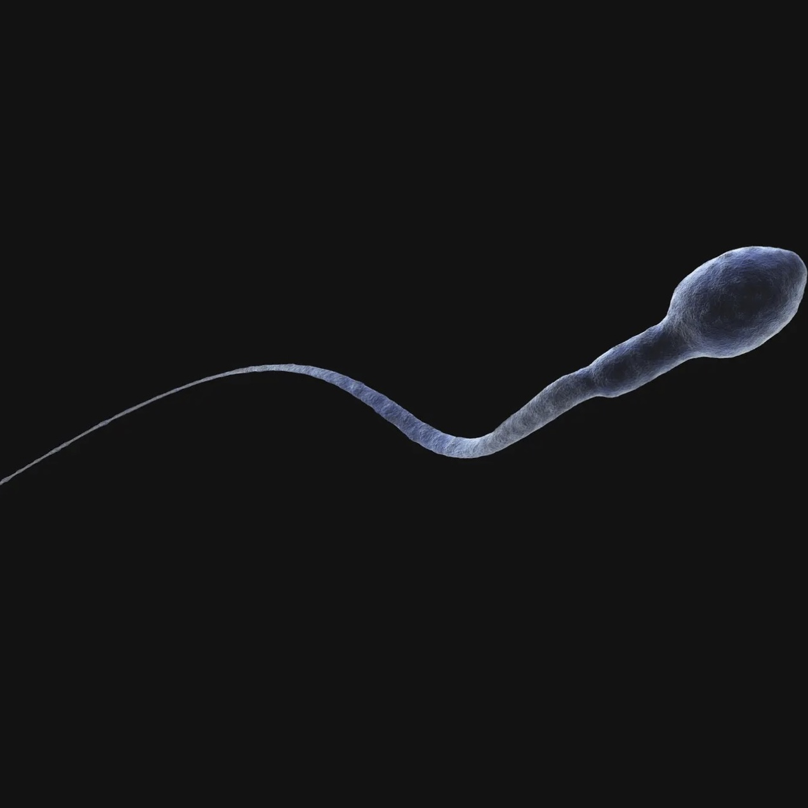
Sperm
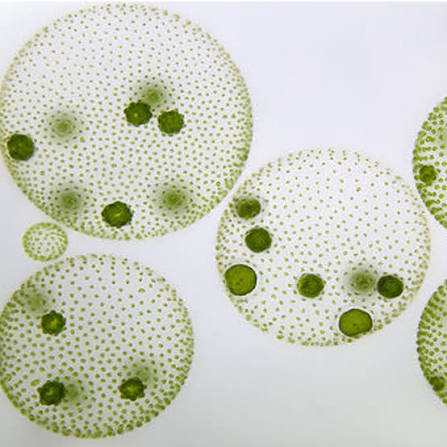
Algae
Artificial microswimmers
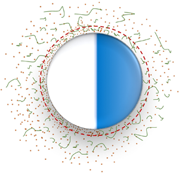
Janus particles
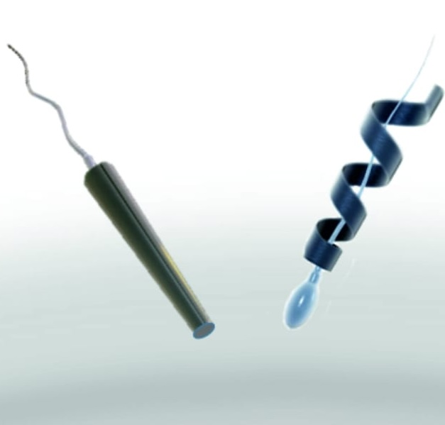
Helical robots
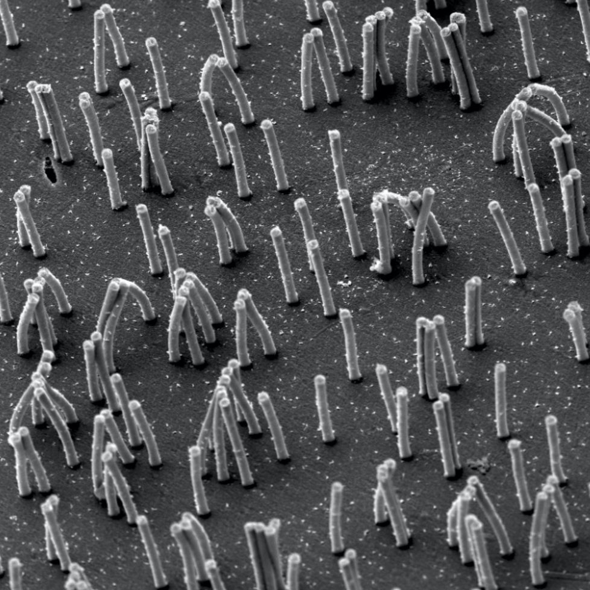
Artifical cilia
Key Scientific Questions
Propulsion
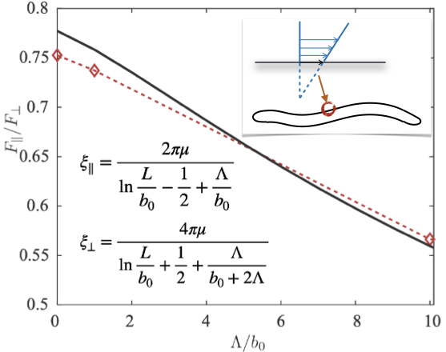
Surface properties reshape hydrodynamic propulsion.
Journal of Fluid Mechanics · 2025
Interactions
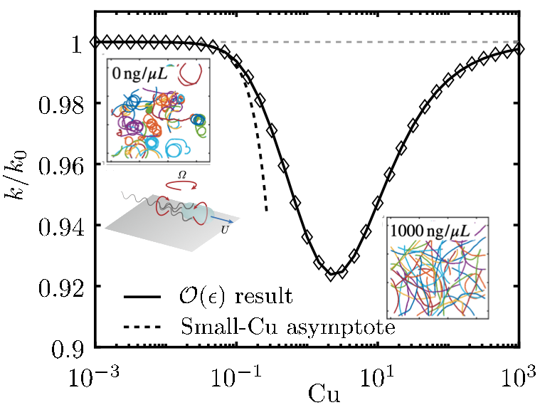
Fluid rheology reshapes swimmer–wall interactions.
Work in preparation
Control
Learning effective swimming strategies.
Physical Review Fluids · 2025
Active particles
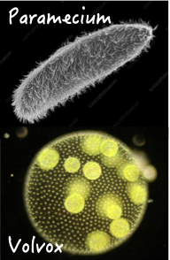
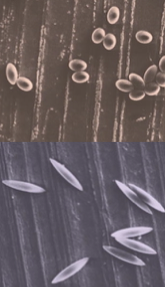
Trevenen & Beltramo, J. Colloid Interface Sci., 2021
Convert energy into autonomous motion
Complex-fluid environments
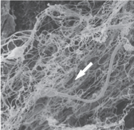
Chrétien, Acta Obstet. Gynecol. Scand., 2003
Often exhibit non-Newtonian rheology
How does fluid rheology alter active propulsion?
Two distinct surface regions can enable self-propelled motion.
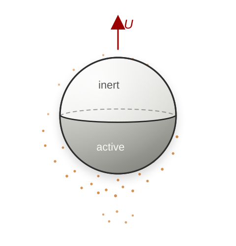
Chemical reaction
creates an uneven solute concentration
Surface concentration gradient
generates a thin surface flow (slip)
Asymmetric slip
produces net propulsion
Self-diffusiophoresis: asymmetric activity → solute gradient → surface slip → propulsion
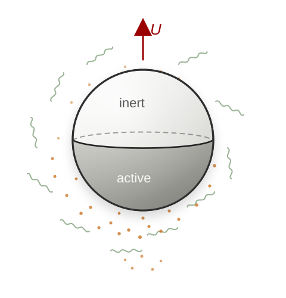
What happens when these particles move in complex fluids?
Self-diffusiophoresis: asymmetric activity → solute gradient → surface slip → propulsion
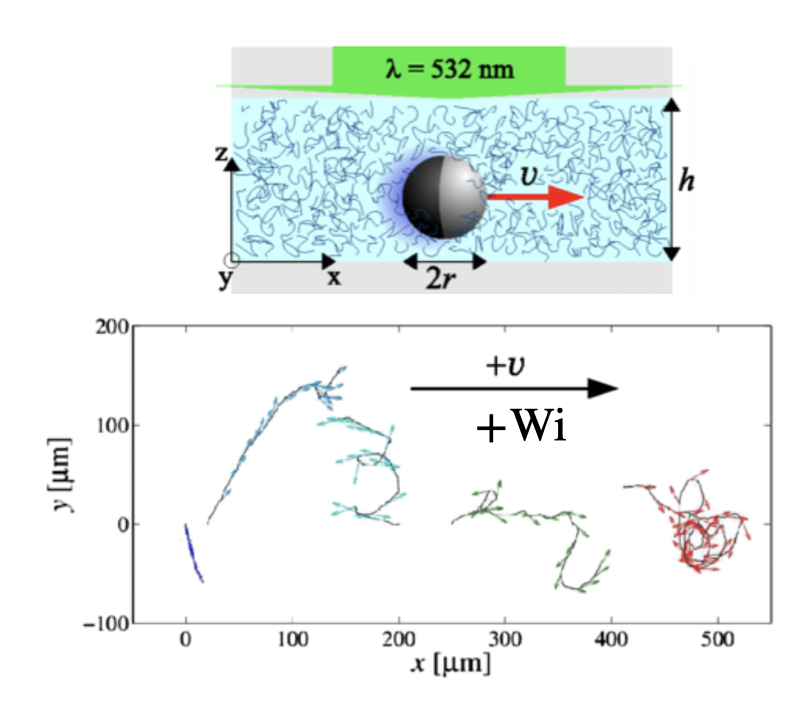
Enhanced rotational fluctuations
Gomez-Solano et al., PRL, 2016
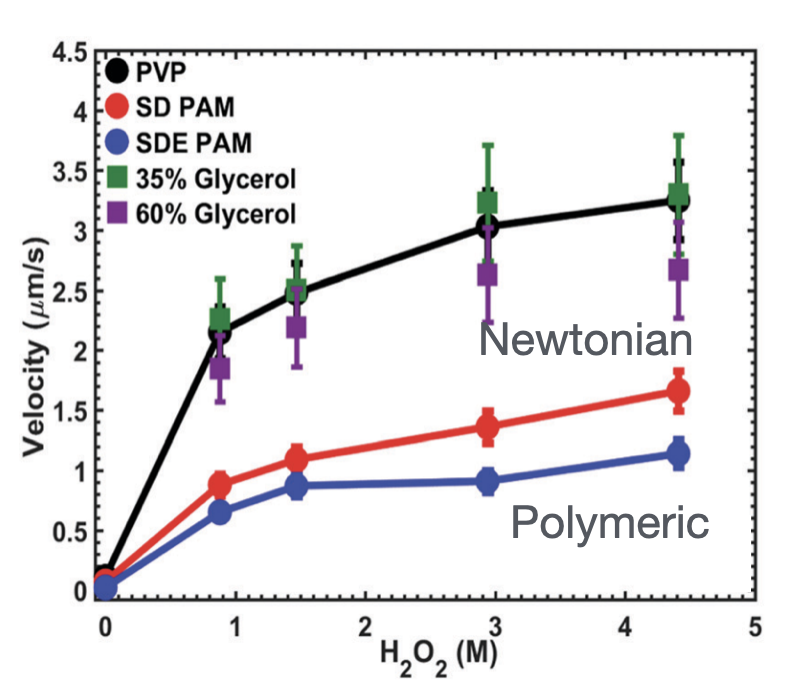
Reduced propulsion
Saad & Natale, Soft Matter, 2019
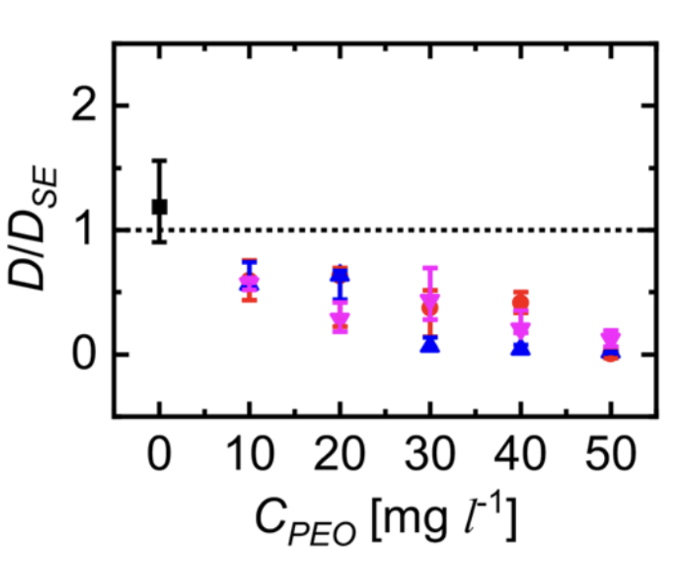
Suppressed active motion
Raman et al., ACS Phys. Chem. Au, 2023
Experiments reveal diverse responses, but the direct rheological effect on propulsion remains unclear.
Shear thinning
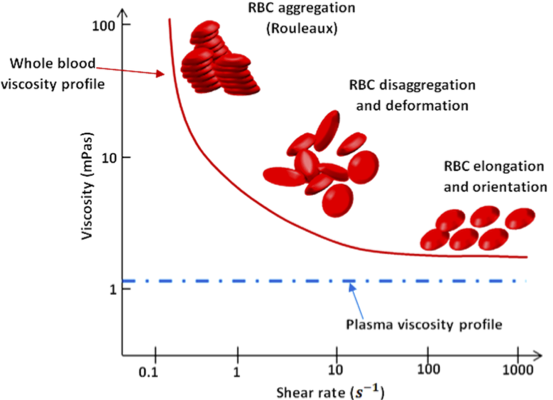
Méndez-Mora et al., Micromachines 12, 726 (2021)
Higher shear rate → lower viscosity
Viscoelasticity
Chrétien, Acta Obstet. Gynecol. Scand., 2003
Deformation → relaxation
These two rheological effects can coexist in the same complex fluid.
Shear thinning
Carreau model
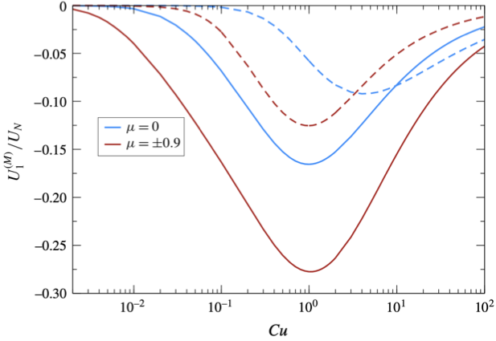
Sphere: propulsion is reduced
Viscoelasticity
Second-order fluid
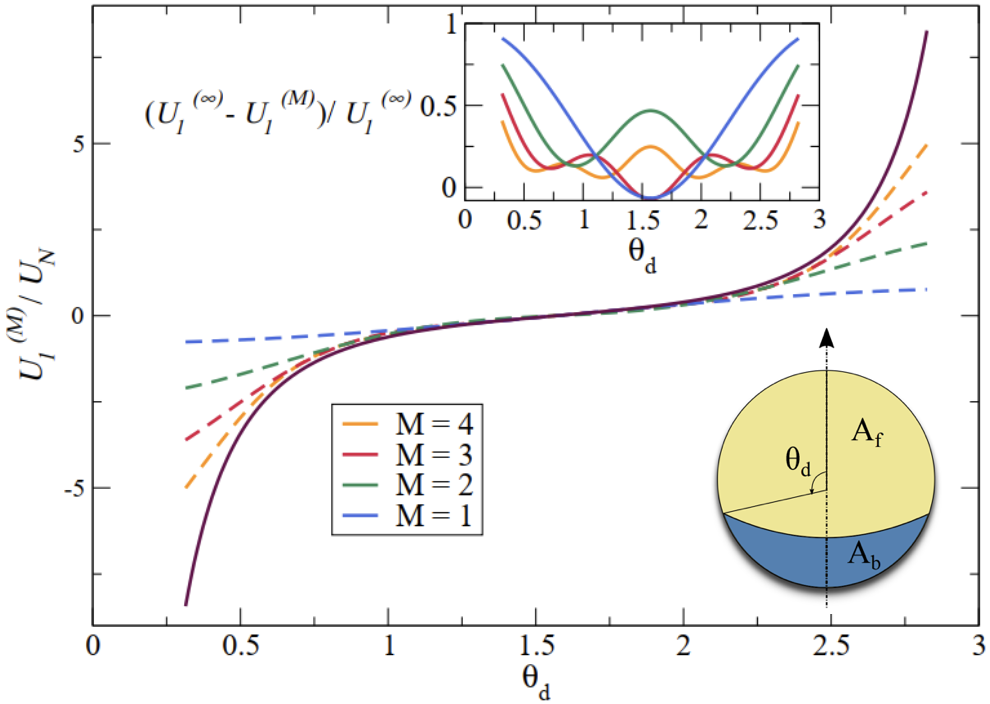
Half-coated sphere: leading-order correction vanishes
Datt et al., J. Fluid Mech., 2017
Sphere — correction vanishes at half-coating
?
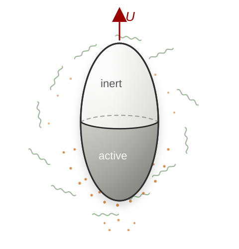
Spheroid — geometric anisotropy
We vary two control parameters: eccentricity \(e\) (shape) and coverage \(\zeta_0\) (activity).
Stokes flow:
\[ \nabla\cdot\boldsymbol{\sigma}=0, \qquad \nabla\cdot\mathbf{u}=0, \qquad \boldsymbol{\sigma}=-p\mathbf{I}+\mathbf{T} \]
\[ \dot{\boldsymbol{\gamma}} = \nabla\mathbf{u}+(\nabla\mathbf{u})^T \]
Shear thinning: Carreau model
\[ \mathbf{T} = \left[ \beta+(1-\beta) \left( 1+\frac{Cu^2}{2} \dot{\boldsymbol{\gamma}}:\dot{\boldsymbol{\gamma}} \right)^{(n-1)/2} \right] \dot{\boldsymbol{\gamma}}. \]
\(Cu\) — flow shear-rate / characteristic shear-rate ratio
\(\beta\) — high-/low-shear viscosity ratio
\(n\) — shear-thinning index
Viscoelasticity: Second-order fluid
\[ \mathbf{T} = \dot{\boldsymbol{\gamma}} -De\left( \mathbf{G} +b\,\dot{\boldsymbol{\gamma}}\cdot\dot{\boldsymbol{\gamma}} \right). \]
\(De\) — elastic / viscous stress ratio
\(b\) — normal-stress ratio
\(\mathbf{G}\) — upper-convected derivative
Non-Newtonian rheology enters as a forcing set by the Newtonian flow:
\[ \boldsymbol{\sigma}_1 = -p_1\mathbf I + \dot{\boldsymbol{\gamma}}_1 + \mathbf A \]
Shear thinning (Carreau)
\[ \color{#1f5f8f}{\mathbf A_{\mathrm{ST}}} = \left[ -1+ \left( 1+\frac{Cu^2}{2} \dot{\boldsymbol{\gamma}}_0:\dot{\boldsymbol{\gamma}}_0 \right)^{(n-1)/2} \right] \dot{\boldsymbol{\gamma}}_0 \]
Viscoelasticity (second-order)
\[ \color{#a95724}{\mathbf A_{\mathrm{VE}}} = -\left( \mathbf G_0 + b\,\dot{\boldsymbol{\gamma}}_0\cdot \dot{\boldsymbol{\gamma}}_0 \right) \]
An auxiliary towing problem + the reciprocal theorem give \(U_1\) directly, without solving the first-order flow:
\[ U_1 = -\frac{(\tau_0^2+1)\operatorname{coth}^{-1}\tau_0-\tau_0}{4\tau_0^2} \int_{\tau_0}^{\infty}\int_{-1}^{1} (\boldsymbol{A}:\nabla\hat{\boldsymbol{u}})(\tau^2-\zeta^2)\,\mathrm{d}\zeta\,\mathrm{d}\tau \]
\(\nabla\hat{\boldsymbol{u}}\): velocity gradient of the auxiliary (towing) flow.
Half-coated particles: \(\zeta_0=0\)
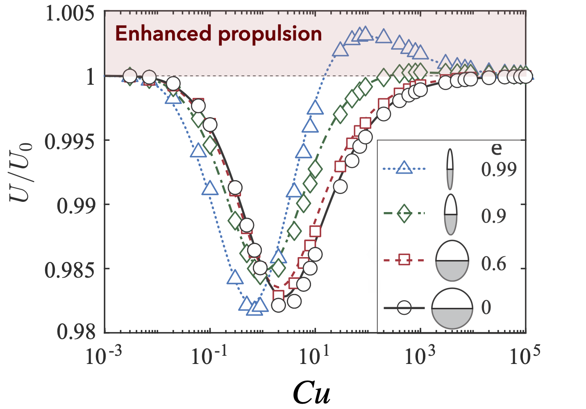
G. Zhu, B. vanGogh, L. Zhu, O.S. Pak and Y. Man. JFM., 2024.
Sphere
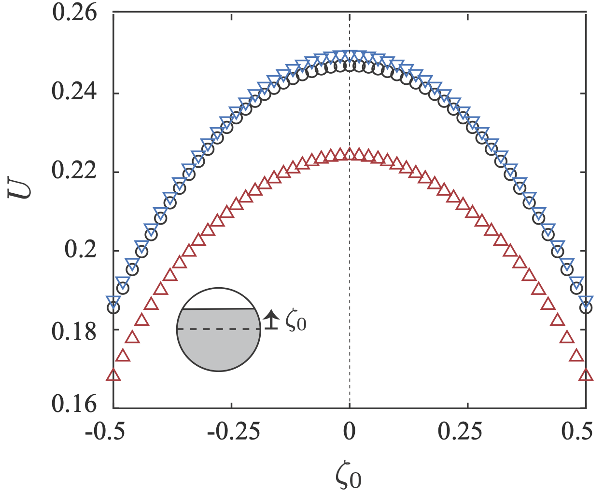
Complementary coatings → same speed
Spheroid
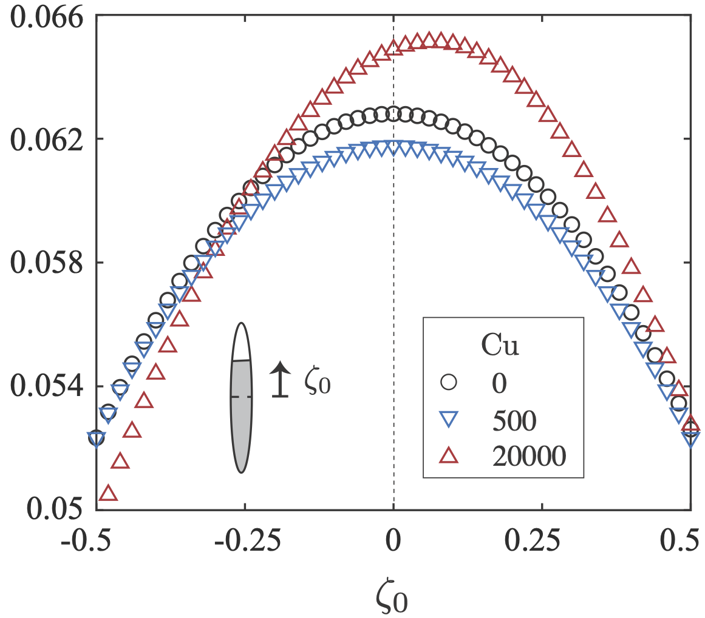
Complementary coatings → different speeds
Geometry breaks the complementary-coating symmetry.
Half-coated particles: \(\zeta_0=0\)
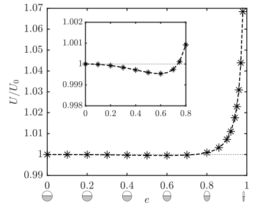
Q. Zhao, G. Zhu and Y. Man. (submitted).
Propulsion vs Coverage
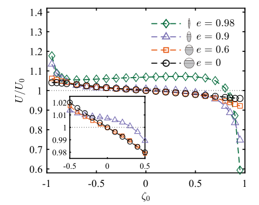
Enhancement vs Reduction
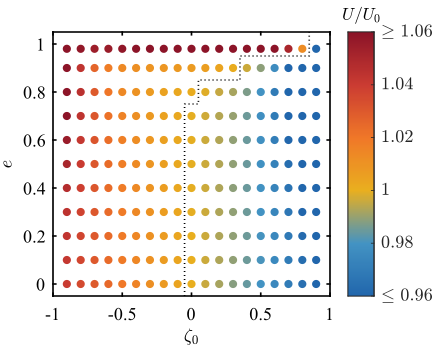
Eccentricity breaks the coverage antisymmetry, and the enhancement regime broadens with elongation.
Geometry can qualitatively change non-Newtonian propulsion.
Acknowledgements
赵强，博士生
北京大学
朱光普 特聘研究员
南京航空航天大学
Prof. On Shun Pak
Santa Clara University